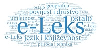

Leksikografski zavod Miroslav Krleža već 70 godina prikuplja, sustavno obrađuje, predstavlja pa i tumači činjenice i spoznaje o pojavama, pojmovima i osobama iz prošlosti i sadašnjosti te na taj način pridonosi hrvatskoj kulturi, znanju i općoj naobrazbi naše zajednice.
Dio znanja okupljenog u više od 400 svezaka enciklopedija, rječnika i leksikona danas je dostupan i na mrežnim stranicama Zavoda, koji već desetak godina digitalizira tiskana izdanja te objavljuje nova digitalna izdanja, omogućujući slobodan pristup svima koji žele točnu i provjerenu informaciju.
Sadržaj platforme e-Leks osmišljen je u svrhu dodatnoga informiranja javnosti i pravodobnog pružanja informacija o aktualnim događajima u Hrvatskoj i svijetu, pomaganja učenicima i studentima u pronalaženju podataka u digitalnim i digitaliziranim enciklopedijama i leksikonima te prikazom leksikografskoga blaga prikupljanoga više desetljeća na zanimljiv i informativan način.
Pripremili smo tek neke članke koji će vas usmjeriti i pokazati vam kako jednostavno pronaći željenu informaciju. Članke smo razvrstali u rubrike koje odgovaraju područjima u mrežnom izdanju Hrvatske enciklopedije Leksikografskoga zavoda, opće enciklopedije koja se temelji na knjižnom (tiskanom) izdanju objavljenom u 11 svezaka od 1999. do 2009. Mrežno izdanje Hrvatske enciklopedije redovito se uređuje i dopunjava novim tekstovima, otvoreno je za komentare i prijedloge korisnika te na taj načn ispunjava svoju temeljnu zadaću kao izvor točnih i pouzdanih informacija.
Pozornost skrećemo i na iznimno vrijedno mrežno izdanje Hrvatskoga biografskog leksikona, dugoročnoga biobibliografskog projekta Leksikografskoga zavoda u kojem se donose životopisi osoba koje su pridonijele hrvatskom identitetu, društvu, kulturi i znanosti.
Vrijedan je izvor podataka i mrežno izdanje Hrvatske tehničke enciklopedije u kojoj su prikupljena i usustavljena znanja o hrvatskoj tehničkoj baštini te o povijesti i dosezima tehnike koja zauzima važno mjesto u kulturi i društvu. Online izdanje enciklopedije redovito se ažurira i dopunjava novim sadržajima.

Leksikografski zavod nastavlja sustavno digitalizirati starija izdanja i tako vrijednu baštinu svojih enciklopedija i leksikona prenijeti budućim naraštajima. Na Portalu znanja okupljeno je devet izdanja koja korisnicima nude više od 100 000 članaka.
Popis svih digitalnih i digitaliziranih izdanja Leksikografskoga zavoda pogledajte ovdje